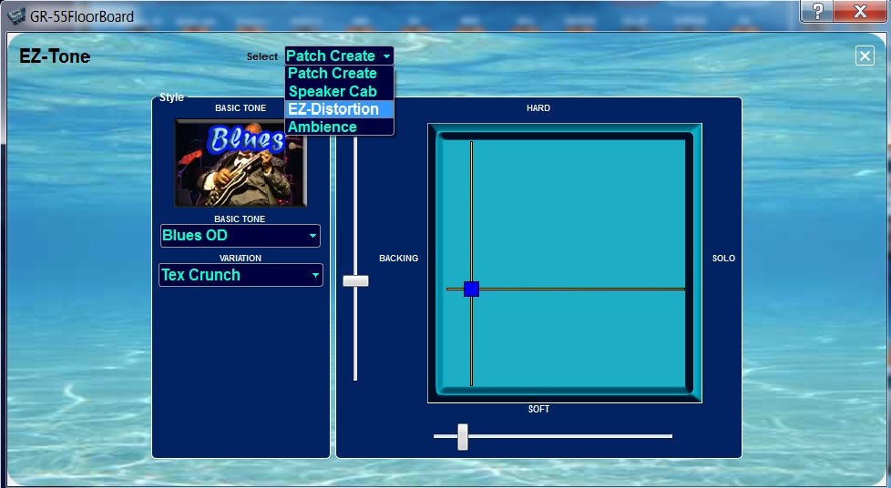

GR-55
FloorBoard Editor Help
Index
EZ-Tone
The EZ-TONE button on the main GR-55 FloorBoard page opens the EZ-Tone panel to the Patch Create selection. All the EZ-Tone graphs are used by holding the mouse button down on the
blue point while draging it around the grid.

Select Patch Create to begin, if not already there, where:
- You can choose a music style from the BASIC TONE box, such as Blues OD, Jazz, LiverPool, etc.
- The VARIATION combobox changes the list of 10 patches to suit
the chosen catagory.
- Each time a selection is made, the patch is
updated in the editor GUI and on the GR-55.
- Clicking on the icon image will
also refresh the patch.
- The Preamp grid changes multiple preamp parameters.
- The preamp
type is determined by the EZ-Patch selection.
- Use the sliders or cross-hairs to change the preamp settings.
Select Speaker Cab to make changes to multple speaker cabinet parameters:
- On the X axis, the LIVE end
of the scale almost disables the cab sims, where the RECORDING end has
100% cabinet.
- The Y axis changes the rest of the speaker parameters
(size, mic position).
The EZ-Distortion page uses the modulation effect distortion:
- Only
when the X~Y position is moved will the effect be enabled and switched
to distortion, where X axis controls "drive" and the Y-axis controls "tone".
The EZ-Ambience works on the delay, reverb and chorus
(determined by the effects enabled in the EZ-Patch selection):
- The X-axis changes the wet/dry levels, Y-axis changes room size on the panel (or time/rate in the effects).
Save your changes to a USER patch to recall your newly created patch for future use.